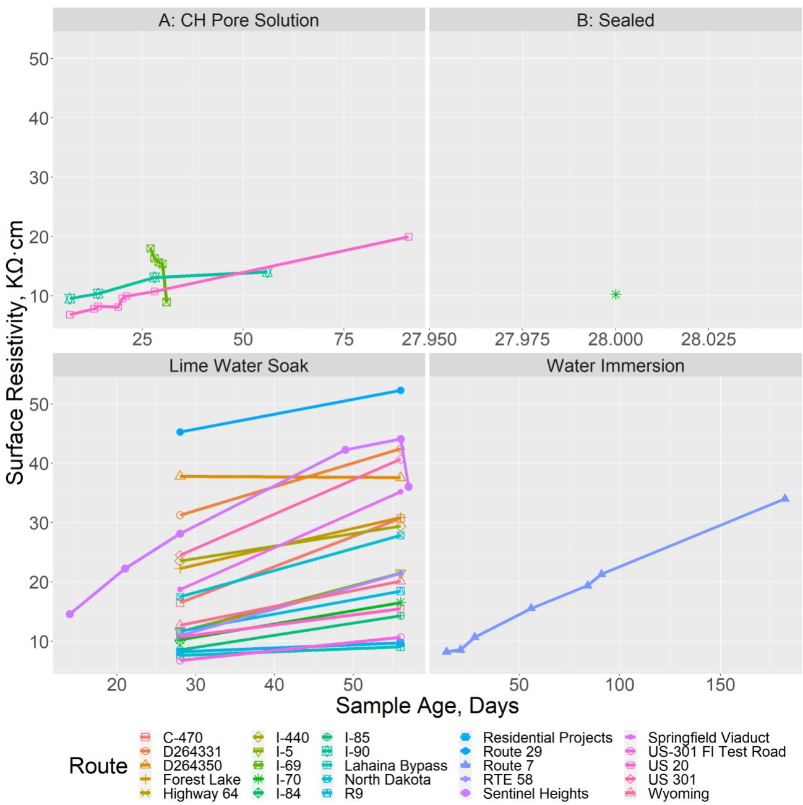
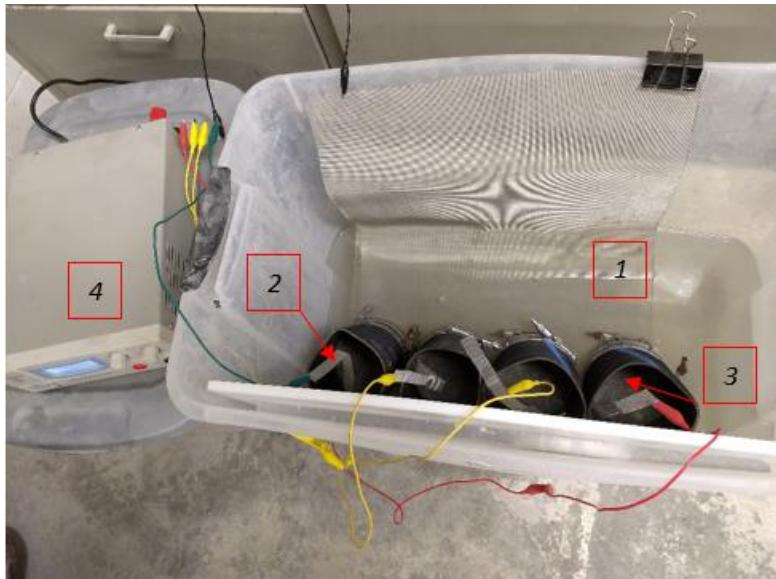
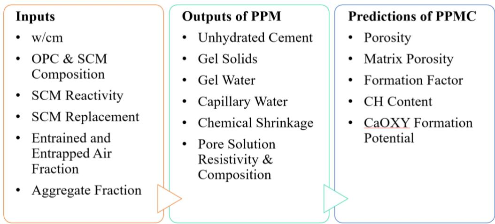
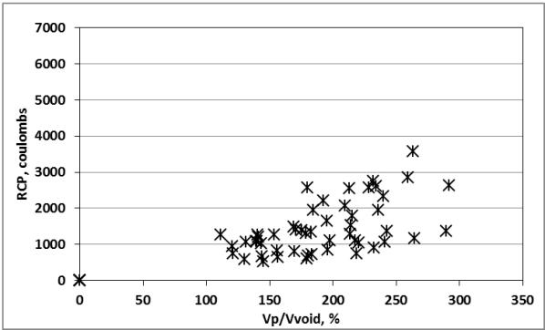

Rapid Chloride Migration
A non-steady-state migration test that measures the rate of chloride ion penetration through hardened concrete under an externally applied electrical field. The test accelerates chloride transport to evaluate the resistance of concrete to chloride ingress — a critical durability parameter for bridge decks exposed to deicing salts.
Sources (6)
Standardized Test Methods (AASHTO)
The Rapid Chloride Penetration Test (RCPT), standardized as AASHTO T 277, measures the total electrical charge passed through a concrete specimen over six hours under a 60 VDC potential to qualitatively assess chloride penetrability based on conductivity [1]. Rather than isolating chloride migration specifically, this method evaluates the combined effect of all dissolved ions in the pore solution [1]. Other methods for assessing concrete properties include AASHTO T 358, which determines the electrical resistivity of water-saturated concrete using a four-pin Wenner probe array; in this nondestructive test, an AC potential difference applied to outer pins generates current flow measured by inner probes, providing a rapid assessment of moisture penetration resistance without requiring chemical reagents or specimen destruction [1].

Surface resistivity versus age line data for various conditioning methods [1]Alternatively, the uniaxial resistivity test (AASHTO TP 119) passes electrical current through the full length of saturated concrete specimens between two electrode plates at either end [1]. By sampling a larger material volume than surface methods, this bulk measurement approach is less sensitive to surface variations and allows for simpler geometric correction compared to surface resistivity techniques [1].
Rapid Chloride Penetration Test (RCPT) Procedure
In the rapid chloride migration test, concrete specimens are partially immersed in a chloride solution (typically 3% NaCl) on one face and an alkaline solution (0.2 M KOH) on the other, with an external voltage applied to drive chloride ions through the specimen. To ensure uniform saturation of the concrete discs prior to testing, a specific conditioning protocol is employed involving conditioning specimens in a vacuum desiccator at 25 psi negative pressure for three hours, followed by submersion in degassed water under the same pressure for one hour and then at atmospheric pressure for 18 hours [2]. The electrolytic cell setup utilizes a steel mesh cathode submerged in a 10% by mass sodium chloride solution and a steel mesh anode submerged in a 0.3 normality sodium hydroxide solution, with the applied electrical potential set to 30.0 V for a duration of 24 hours; small rubber pads are placed between the concrete specimens and the metal meshes to prevent direct contact and ensure current flows through the solutions [2].

RMT setup: (1) cathode in NaCl solution, (2) anode in NaOH solution, (3) specimen in rubber sleeve, (4) power supply [2]After the specified duration, the specimen is split and silver nitrate (AgNO₃) is applied to the fracture surface to visually determine chloride penetration depth. Chloride penetration depth is measured at seven distinct locations along the split face of each specimen using a caliper after spraying with silver nitrate, which reacts with chloride ions to form a visible white silver chloride precipitate within 10 to 15 minutes [2]. This multi-point measurement approach allows for the calculation of average chloride penetration depths across different concrete mix designs [2], from which the non-steady-state migration coefficient is then calculated using the penetration depth, applied voltage, temperature, and test duration.
Electrical Resistivity Measurement Techniques
The uniaxial resistivity test offers advantages over surface methods, including requiring only one measurement instead of four, being less sensitive to surface variations, and providing a larger volume of material sampled for testing; however, specimen condition before and during testing is critical for repeatability [1]. In contrast, the surface resistivity test evaluates concrete’s ability to resist moisture penetration through electrical measurements and takes approximately five minutes to conduct without involving chemicals [1]. This nondestructive approach allows specimens to be reused for other testing at later ages [1], and Table 4 in Spragg et al. (2013b) establishes recommended resistivity values that correlate surface resistivity tests with rapid chloride penetration test results, providing a relationship between these different electrical assessment methods [1].
 Surface resistivity versus age for various locations [1]
Surface resistivity versus age for various locations [1]
Formation Factor and Pore Connectivity
The formation factor (F) normalizes electrical test results by directly relating to concrete pore volume and connectivity as well as the conductivity of the pore solution [1]. This parameter addresses limitations in resistivity testing where results depend on sample geometry, temperature, saturation degree, and storage conditions [1]. Furthermore, the uniaxial resistivity test results can be used to calculate the formation factor (F), which relates to concrete pore volume and connectivity; this capability provides additional microstructural information beyond simple resistance measurements [1].

PPM = pore partitioning model; PPMC = pore partitioning model for concrete Jason Weiss Figure 34. Calculation framework used to predict concrete performance [1]Test Limitations and Variables
Low binder content concrete can exhibit such high conductivity at early ages that rapid chloride migration testing cannot be performed, as the porous structure allows voids to percolate through the full specimen thickness [3]. Regarding specific methodologies, AASHTO T 358 limitations include result dependency on sample geometry, test temperature, degree of saturation, and storage conditions [1]; however, standardization efforts have been completed to address these variables by normalizing sample conditioning, testing conditions, and specimen geometry [1]. Additionally, AASHTO T 277 limitations include current being influenced by all ions in the pore solution rather than just chloride ions, measurements occurring before steady-state migration is achieved, and specimen temperature increases due to applied voltage [1], all of which affect the specificity of chloride penetrability assessment [1].
 Schematic of the four-point Wenner array probe setup [1]
Schematic of the four-point Wenner array probe setup [1]
Impact of Mix Design on Permeability
The Hydromix two-stage mixing method produces concrete with significantly lower chloride permeability, approximately 30 percent less than conventional concrete mixes [4], utilizing high shear mixing at approximately 14,000 revolutions per minute for 60 seconds to accelerate cement hydration reactions and reduce plastic viscosity in paste slurries [4]. While increasing cementitious content generally increases chloride penetrability because the cement paste exhibits greater electrical conductivity than aggregate [3], slag and Class C fly ash mixtures demonstrate marked reductions in chloride penetrability compared to plain cement, whereas Class F fly ash shows similar benefits only at later ages [3].

Overview of the effect of Vp/Vvoid on penetrability for all mixtures at 28 and 90 days [3]In semi-flowable self-consolidating concrete (SFSCC), all samples demonstrated higher chloride ion permeability at 28 days compared to conventional C3 mixtures, exhibiting noticeably higher rapid chloride ion permeability and porosity at 28 days compared to conventional pavement concrete [5]. However, these properties become comparable at later ages due to the extensive use of supplementary materials, as results for older SFSCC concrete were comparable to the C3 mix [5].
Effect of Fiber Reinforcement and Additives
Concrete containing fiberglass fibers exhibits higher chloride permeability compared to mixes without such reinforcement [4]. Conversely, internal curing with lightweight fine aggregate (LWFA) reduces the rapid chloride permeability by approximately 10% compared to control mixes at 28 days, resulting in a correspondingly lower diffusion rate [6].
Research Findings: Bridge Deck Performance
Wireless corrosion sensors installed at depths of 0.5, 1.0, and 1.5 inches below the surface can passively indicate whether chlorides have penetrated to specific burial depths when read by a scanner [6]. In the Shafei 2021 study, rapid chloride migration testing was conducted on concrete with PP microfiber dosages of 0.25%, 0.50%, and 1.0% by volume combined with Class F fly ash binder, which showed that both the chloride ion penetration rate and magnitude decreased with increasing PP microfiber content up to 1.0%, indicating that microfibers improve chloride resistance by refining the pore structure and reducing connectivity .
In fiber-reinforced concrete mixes, increasing polypropylene microfiber content from 0.25% to 1.0% by volume results in a progressive decrease in mean chloride penetration depth, with reductions of 7.9%, 15.2%, and 19.1% relative to the control mixture, respectively, while migration coefficients also decrease with higher microfiber dosages, indicating enhanced resistance against chloride ion migration [2]. However, the reduction in chloride penetration depth shows diminishing returns at higher fiber dosages, as the relative decrease from 0.50% to 1.0% PP microfiber content is only 4.7%, which is approximately 40% less than the decreases observed between lower dosage increments; this suggests that while higher fiber contents improve chloride resistance, the efficiency of improvement declines beyond certain thresholds [2].
 Rapid chloride migration test results for (a) mean chloride penetration depth and (b) migration coefficient [2]
Rapid chloride migration test results for (a) mean chloride penetration depth and (b) migration coefficient [2]
Connections
- Fiber-Reinforced Concrete — PP microfibers reduced chloride migration rates
- Deicing Salt Effects — Chloride ingress from deicing salts is the primary durability threat to bridge decks
- Supplementary Cementitious Materials — Class F fly ash binder also reduced chloride penetration
- Silica Fume — Evaluated for chloride resistance but had negative effects on capillary pressure
- Freeze-Thaw Durability — Chloride penetration and freeze-thaw act synergistically to degrade concrete
- Transport Properties & Permeability
References
- J. Gross, J. Weiss, T. Ley, P. Taylor, N. Weitzel, T. Van Dam, G. Smith, and C. Jones, "Performance-Engineered Concrete Paving Mixtures," National Concrete Pavement Technology Center, Iowa State University, Ames, IA, Rep. TPF-5(368), 2022. [Online]. Available: https://www.intrans.iastate.edu/wp-content/uploads/2023/04/performance-engineered_concrete_paving_mixtures_w_cvr.pdf
- B. Shafei, P. Taylor, B. Phares, and M. Kazemian, "Fiber-Reinforced Concrete for Bridge Decks," Bridge Engineering Center, Iowa State University, Ames, IA, Rep. TR-767, 2021. [Online]. Available: https://www.intrans.iastate.edu/wp-content/uploads/2021/12/fiber-reinforced_concrete_in_bridge_decks_w_cvr.pdf
- P. Taylor, F. Bektas, E. Yurdakul, and H. Ceylan, "Optimizing Cementitious Content in Concrete Mixtures for Required Performance," National Concrete Pavement Technology Center, Ames, IA, 2012. [Online]. Available: https://www.intrans.iastate.edu/wp-content/uploads/2018/03/taylor_ocm_w_cvr2.pdf
- T. D. Rupnow, V. R. Schaefer, K. Wang, and B. L. Hermanson, "Improving PCC Mix Consistency and Production Rate through Two-Stage Mixing," Center for Transportation Research and Education, Ames, IA, Rep. TR-505, 2007. [Online]. Available: https://www.intrans.iastate.edu/wp-content/uploads/2018/03/two-stage-mix-1.pdf
- K. Wang, S. P. Shah, J. Grove, P. Taylor, P. Wiegand, B. Steffes, G. Lomboy, Z. Quanji, L. Gang, and N. Tregger, "Self-Consolidating Concrete—Applications for Slip-Form Paving: Phase II," National Concrete Pavement Technology Center, Ames, IA, Rep. TPF-5(098), 2011. [Online]. Available: https://www.intrans.iastate.edu/wp-content/uploads/2018/03/SCC_Phase_2_final_report-edited_wcover.pdf
- P. Taylor, T. Hosteng, X. Wang, and B. Phares, "Evaluation and Testing of a Lightweight Fine Aggregate Concrete Bridge Deck in Buchanan County, Iowa," National Concrete Pavement Technology Center and Bridge Engineering Center, Ames, IA, Rep. TR-648, 2016. [Online]. Available: https://www.intrans.iastate.edu/wp-content/uploads/2018/03/Buchanan_LWFA_bridge_deck_w_cvr.pdf